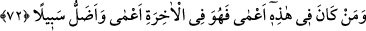
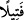

Makâsıdü’l-hasene’de zikretmiş ve sahih olduğunu söylemiştir. Kurtubî de
Tezkire’sinde zikretmiştir.
Bu hadisten iki sonuç çıkmaktadır: Bunlardan ilki telkin sırasında ayakta durmanın
müstehab olduğu, ikincisi de ölüye babasının değil kendisinin ve annesinin ismiyle
seslenilmesidir. Ancak el-Makâsıd ve el-Mesâbîh hadisleri içinde Hz. Peygamber
(s.a.)’in “Kıyâmet günü kendi isimlerinizle ve babalarınızın isimleriyle
çağırılırsınız.”[122] buyurduğu da rivâyet edilmiştir. Bu rivâyet muhtemelen yukarıda
zikrettiklerimizle çelişmemektedir. Çünkü bu hadis güzel isimler koymak ve hoş
olmayan isimleri değiştirmeye teşvik sadedinde söylenilmiştir. Çünkü Câhiliyye
âdetleri üzere muddaci‘, asram ve âsıye gibi hoş olmayan isimler takıyorlardı. Hz.
Peygamber (a.s.) nâhoş olan isimleri güzel isimlerle değiştirirdi. Kesilmiş anlamındaki
‘sarm’ kökünden gelen asram ismini, âdetâ sen kesilmiş değil aksine köklerine bitişik
münbitsin der gibi ekin parçası anlamındaki ‘zür‘a’ ismiyle; yatan anlamındaki
muddaci‘ismini canlı, haraketli anlamındaki ‘münbais’le; isyankâr anlamındaki
‘âsıye’yi; güzel anlamındaki ‘cemîle’ ile değiştirmiştir.
O gün çağrılanlardan “kimlerin amel defteri sağından verilirse, onlar, en küçük bir
haksızlığa uğramamış olarak” amel defterlerinde yazılı olan amellerinin ecirlerinden
hiçbir şey eksiltilmemiş olarak “amel defterlerini okuyacaklar.” Amel defteri sağından
verilenler, saîdlerdir. Kitabın sağ taraftan verilmesinde sâhibini onurlandırma ve
müjdeleme anlamı vardır. Amel defteri sağından verilenler, sevinçli bir şekilde açıktan
okurlar ve içinde yazılı iyiliklerden faydalanırlar. Şakîler de kitaplarını okuyor
olmalarına rağmen âyette onlar anılmamıştır. Çünkü onlar kitaplarında yazılanları korku
ve utançlarından dolayı sesli okumazlar. Zâten onların faydalanacakları iyi amelleri de
yoktur.
“  Fetîl” iki parmak arasındaki kir veya çekirdeğin üzerindeki zar ya da çok az bir
şey demektir. “Fetîl” azlık ve değersizliği ifâde etmek için örnek olarak kullanılır.
72. Bu dünyada kör olan kimse âhirette de kördür; üstelik iyice yolunu
şaşırmıştır.
Şu çağrılanlardan “Bu dünyada” doğruyu göremeyip kalbi “kör olan kimse ahirette
de kördür;” kurtuluş yolunu göremez. Çünkü ilk körlük ikinciyi kaçınılmaz kılmaktadır.
Dolayısıyla kâfir cennet yoluna, isyankâr itâatkarın sevabına, günahkâr da kamillerin
makamlarına ulaşamaz. “üstelik iyice yolunu şaşırmıştır.” İstîdadının kaybolması,
sebeplerin ve vesîlelerin işlememesi ve artık mühletin bulunmaması nedeniyle
dünyadaki körden daha şaşkındır.
et-Te’vîlâtü’n-Necmiyye’de şöyle der: “Kimlerin amel defteri sağından verilirse,”